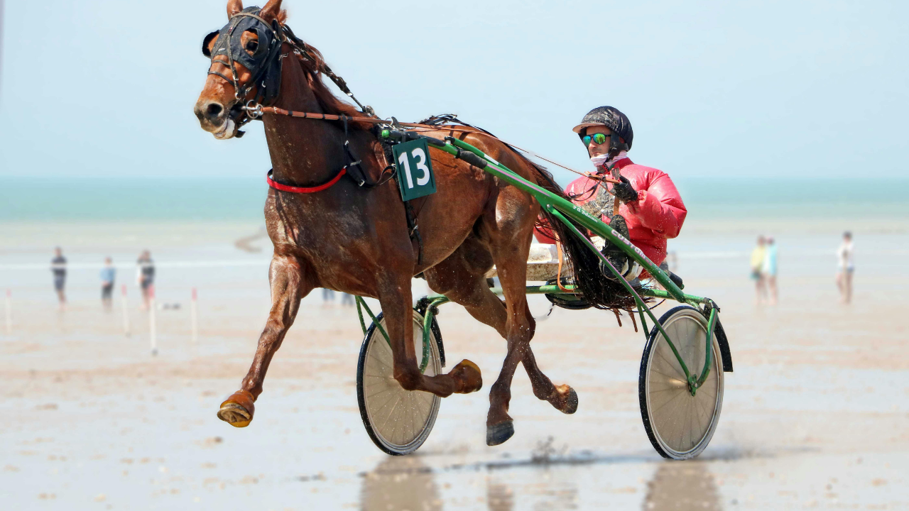

Le Grand National du Trot fait étape à l'hippodrome d'Argentan. Une étape majeure du circuit du trot français qui réunit les meilleurs trotteurs de la génération, avec un lot d'une densité exceptionnelle et un Quinté+ qui promet une belle bataille.
Le Grand National du Trot est l'un des circuits les plus prestigieux du trot français. L'étape d'Argentan accueille les meilleurs spécialistes de l'attelé sur un parcours de vitesse exigeant qui récompense la régularité et la tenue.
Les trotteurs présents affichent des gains importants et une expérience confirmée des grandes épreuves. Sur ce type de course, le déroulement du parcours et la position des drivers comptent énormément.
Pour bien pronostiquer ce Grand National, il faut étudier la forme récente de chaque concurrent, sa réussite sur le parcours et la qualité de son driver. Les chevaux ayant couru en vue lors des étapes précédentes du circuit se présentent souvent avec un avantage certain.
Les gains cumulés, la régularité dans les 5 premiers et la capacité à s'élancer sans fauter sur le parcours d'Argentan seront nos critères prioritaires.
Notre base se porte sur un concurrent régulier, en pleine forme, qui retrouve des conditions idéales. Autour de cette base, nous alignons les chevaux les plus solides et les outsiders capables de créer la surprise pour compléter le Quinté.
Nos tickets à trois budgets couvrent un large spectre de combinaisons pour maximiser vos chances.
Quel que soit votre budget, misez avec modération et ne dépassez jamais le montant que vous avez décidé d'allouer aux courses. Le jeu doit rester un plaisir.